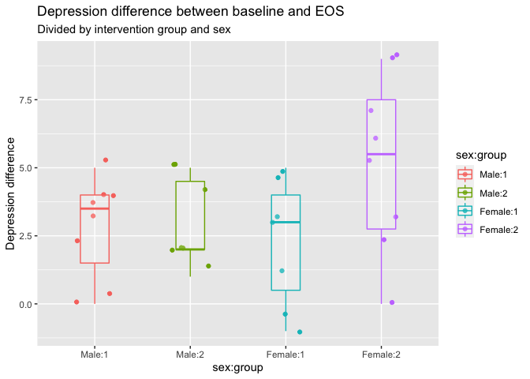

Categories:
Tags: R, Analysis, Linear regression
Let’s talk linear regression. It’s the thing we learn about first year in psychology at Uni, and it blows all our minds that we are doing math in psychology. An unfortunate effect of all high school student counsellors in Norway thinking all psychologists do is shrink people’s heads. And then here we come to Uni and first semester they stick us with math.
I’m no statistician, I’m no mathematician. So I’ll be honest with you all, I am not the one to answer your most indepth and deep questions about stats. But, I can hopefully get you going in doing stats in R.
One of the things that took me a PhD to get, is that when we are going ANOVAs and ANCOVAs (psychology’s favourite stats approaches), we are in fact doing linear regression. Many students find the term “linear regression” intimidating, all the while running statistical tests that at their core are exactly that. It’s a flaw in how we teach stats to psychology students, that we are struggling to convey this point.
If you are running t-tests, ANOVA’s and ANCOVA’s, you are doing linear regression.
There once was a model, ANOVA,
— Chelsea Parlett-Pelleriti (@ChelseaParlett) May 10, 2020
who along with their cousin ANCOVA,
made a great big confession:
“We’re the same as regression,
but we’ve established a separate persona.”
In this post we will go through a couple of examples of how we can specify different linear models (linear regressions) in R, and compare how running specialised types of linear regressions (like ANOVA) can also be specified as a linear model. I will focus on running models, not on what constitutes good or bad models or their interpretation. These are important things to think about when doing analyses, and no analysis is completely objective. Knowledge of the source of the data, the context in which the data was collected, the assumed and the actual distribution of the data etc., these are all important aspects to think about before, during and after analysing the data. But these things all depend on the data at hand, and as such I will focus on how you can run models in R, and it will be up to you to try to translate your hypothesis into a model. This can be hard, I have almost daily discussions with co-workers regarding this point.
I am no genious here, I got the inspiration for this post from this amazing sheet made by [Jonas Kristoffer Lindeløv](Jonas Kristoffer Lindeløv)
Before we get started, let’s cover some R syntax regarding modelling. While there might be specific versions of this formula depending on the modelling you are doing, there are general rules in R on how we specify models.
Running models in R, we use something we call a formula. This is an unquoted expression of your model specification.
| formula | tests | read as |
|---|---|---|
| y ~ x | main effect of x on y | y predicted by x |
| y ~ x + z | main effects of x and z on y | y predicted by both x and z |
| y ~ x:z | interaction of x and z on y | y predicted by the interaction of x and z |
| y ~ x + z + x:z | main and interaction effects of x and z on y | y predicted by x and z, as well as their interaction |
| y ~ x * z |
What is on the left-side of the tilde (~) is your dependent variable, and on the right you place you predictors.
Using this syntax we can build regression models that test our hypotheses.
Notice that the two last rows are testing the same thing, the bottom rows is a shorthand for the formula above, which R will expand to the above formula when running it.
For the examples we will be running, we will use data from the SPSS survival guide, a dataset a lot of fledgling Psychologists are familiar with, and that I have myself used in two posts:
library(tidyverse)
library(rio)
# Start with importing the SPSS data
# then recode sex to Male and Female
# and make id a factor (categorical)
# then make group a factor
eData = rio::import("experim.sav") %>%
mutate(
sex = factor(sex, labels=c("Male","Female")),
id = factor(id),
group = factor(group)
)
# Look at it
tibble(eData)
## # A tibble: 30 x 18
## id sex age group fost1 confid1 depress1 fost2 confid2 depress2 fost3
## <fct> <fct> <dbl> <fct> <dbl> <dbl> <dbl> <dbl> <dbl> <dbl> <dbl>
## 1 4 Male 23 2 50 15 44 48 16 44 45
## 2 10 Male 21 2 47 14 42 45 15 42 44
## 3 9 Male 25 1 44 12 40 39 18 40 36
## 4 3 Male 30 1 47 11 43 42 16 43 41
## 5 12 Male 45 2 46 16 44 45 16 45 43
## 6 11 Male 22 1 39 13 43 40 20 42 39
## 7 6 Male 22 2 32 21 37 33 22 36 32
## 8 5 Male 26 1 44 17 46 37 20 47 32
## 9 8 Male 23 2 40 22 37 40 23 37 40
## 10 13 Male 21 1 47 20 50 45 25 48 46
## # … with 20 more rows, and 7 more variables: confid3 <dbl>, depress3 <dbl>,
## # exam <dbl>, mah_1 <dbl>, DepT1gp2 <dbl>, DepT2Gp2 <dbl>, DepT3gp2 <dbl>
To summarise the data quickly, we have an experimental dataset, with two groups. One group has been given an intervention for depression, and the other is a control group. We have depression scores from three time points, and each person has a single row of data, as would be expected from an SPSS file.
The good old t-tests, tests your hypothesis against the null. In short, it tests whether your data deviates enough from a normal distribution around 0. R has a built in t-test version we can run, and we can test if depression scores at the first measurement deviates from null.
# Run t-test
model_1_t <- t.test(eData$depress1)
model_1_t
##
## One Sample t-test
##
## data: eData$depress1
## t = 50.734, df = 29, p-value < 2.2e-16
## alternative hypothesis: true mean is not equal to 0
## 95 percent confidence interval:
## 40.81871 44.24796
## sample estimates:
## mean of x
## 42.53333
Unsurprisingly, it does.
If we look at Jonas’ cheat sheet, we see that the equivalent linear model (lm) would be
# Run equivalent linear model
model_1_lm <- lm(depress1 ~ 1, data = eData)
summary(model_1_lm)
##
## Call:
## lm(formula = depress1 ~ 1, data = eData)
##
## Residuals:
## Min 1Q Median 3Q Max
## -9.5333 -3.5333 0.4667 2.4667 7.4667
##
## Coefficients:
## Estimate Std. Error t value Pr(>|t|)
## (Intercept) 42.5333 0.8384 50.73 <2e-16 ***
## ---
## Signif. codes: 0 '***' 0.001 '**' 0.01 '*' 0.05 '.' 0.1 ' ' 1
##
## Residual standard error: 4.592 on 29 degrees of freedom
Here we are exposed to a “strange” syntax piece, where y is predicted by 1.
This is a way in R we specify when we don’t want to test against some other parameter in our data, weare testing against a null distribution.
The print outs from the two versions are different, and so I needed to wrap lm in summary to get the values we needed to compare.
If you look at them, you will see that both have a t-value of 50.73, estimates of 42.53 and p-value of 2.2e-16.
If we create some tidy table outputs from them using broom, we can see the values are the same easily.
library(broom)
# tidy() gets model outputs we usually use to report our results
model_1_t_tidy <- tidy(model_1_t) %>% mutate(model = "t.test(y)")
model_1_lm_tidy <- tidy(model_1_lm) %>% mutate(model = "lm(y ~ 1)")
results <- bind_rows(model_1_t_tidy, model_1_lm_tidy)%>%
select(model, estimate, statistic, p.value)
results
| model | estimate | statistic | p.value |
|---|---|---|---|
| t.test(y) | 42.533 | 50.734 | 0 |
| lm(y ~ 1) | 42.533 | 50.734 | 0 |
Here we can clearly see we have run the exact same test, in two different ways. In fact the t.test() function in R is just a direct call to the lm() function like we specified.
Most likely we would want to know if the interevention has any effect, i.e. is there a difference between depression scores at baseline (depress1) and at end-of-study (depress3). This would mean running a paired sample t-test, as each person is their own control.
# run paired t-test testing depression from g1 against g2
model_2_t <- t.test(eData$depress1, eData$depress3, paired = TRUE)
model_2_t_tidy <- tidy(model_2_t) %>% mutate(model = "t.test(x, y, paired = TRUE")
model_2_t
##
## Paired t-test
##
## data: eData$depress1 and eData$depress3
## t = 7.1962, df = 29, p-value = 6.374e-08
## alternative hypothesis: true difference in means is not equal to 0
## 95 percent confidence interval:
## 2.385972 4.280695
## sample estimates:
## mean of the differences
## 3.333333
# run linear model
model_2_lm <- lm(depress1 - depress3 ~ 1, data = eData)
model_2_lm_tidy <- tidy(model_2_lm) %>% mutate(model = "lm(y-x ~ 1)")
summary(model_2_lm)
##
## Call:
## lm(formula = depress1 - depress3 ~ 1, data = eData)
##
## Residuals:
## Min 1Q Median 3Q Max
## -4.3333 -1.3333 -0.3333 1.6667 5.6667
##
## Coefficients:
## Estimate Std. Error t value Pr(>|t|)
## (Intercept) 3.3333 0.4632 7.196 6.37e-08 ***
## ---
## Signif. codes: 0 '***' 0.001 '**' 0.01 '*' 0.05 '.' 0.1 ' ' 1
##
## Residual standard error: 2.537 on 29 degrees of freedom
# we combine the two model outputs, rowwise
results <- bind_rows(model_2_t_tidy, model_2_lm_tidy) %>%
select(model, estimate, statistic, p.value)
results
| model | estimate | statistic | p.value |
|---|---|---|---|
| t.test(x, y, paired = TRUE | 3.333 | 7.196 | 0 |
| lm(y-x ~ 1) | 3.333 | 7.196 | 0 |
Let’s break down the linear model here a little, because it also gives us insight into what the paired t-test does.
lm(depress1-depress3 ~ 1) on the dependent variable side, we are subtracting the values from EOS depression, from the depression scores at baseline, in a rowwise fashion.
Then we are testing the difference distribution to the null distribution.
That is what t-tests do (simplistically), they compare a distribution to the null (or another distribution).
We could also do the same test by taking the difference between the two variables first, then doing a one-sample t-test on that.
# calculate the difference between baseline and tp3 depression
eData <- eData %>%
mutate(
dep_slope = depress1 - depress3
)
model_2_lm2 <- lm(dep_slope ~ 1, data = eData)
model_2_lm2_tidy <- tidy(model_2_lm2) %>% mutate(model = "lm(y ~ 1)")
# we combine the three model outputs, rowwise
results <- bind_rows(model_2_t_tidy, model_2_lm_tidy) %>%
bind_rows(model_2_lm2_tidy)%>%
select(model, estimate, statistic, p.value)
results
| model | estimate | statistic | p.value |
|---|---|---|---|
| t.test(x, y, paired = TRUE | 3.333 | 7.196 | 0 |
| lm(y-x ~ 1) | 3.333 | 7.196 | 0 |
| lm(y ~ 1) | 3.333 | 7.196 | 0 |
See that all three models are giving us the same result?
The third model does so because we have pre-calculated the difference scores, rather than doing it formulaically within the lm function.
It’s quite common to test correlations of two variables. If you have two continuous (scalar) variables, you likely want to know the correlation between the two and if the correlation is significant (let’s leave the significance debate aside during this post). We will do a Peasons R tests here, though there are also other options.
# Run correlation test
model_3_cor <- cor.test(eData$depress3, eData$depress1, method = "pearson")
model_3_cor_tidy <- tidy(model_3_cor) %>% mutate(model = "cor.test(x, y)")
model_3_cor
##
## Pearson's product-moment correlation
##
## data: eData$depress3 and eData$depress1
## t = 9.2291, df = 28, p-value = 5.486e-10
## alternative hypothesis: true correlation is not equal to 0
## 95 percent confidence interval:
## 0.7378688 0.9354310
## sample estimates:
## cor
## 0.8675231
# Run equivalent linear model
model_3_lm <- lm(depress3 ~ depress1, data = eData)
model_3_lm_tidy <- tidy(model_3_lm) %>% mutate(model = "lm(y ~ x)")
summary(model_3_lm)
##
## Call:
## lm(formula = depress3 ~ depress1, data = eData)
##
## Residuals:
## Min 1Q Median 3Q Max
## -5.8421 -1.4744 0.1772 1.2933 4.1966
##
## Coefficients:
## Estimate Std. Error t value Pr(>|t|)
## (Intercept) -1.6871 4.4551 -0.379 0.708
## depress1 0.9613 0.1042 9.229 5.49e-10 ***
## ---
## Signif. codes: 0 '***' 0.001 '**' 0.01 '*' 0.05 '.' 0.1 ' ' 1
##
## Residual standard error: 2.576 on 28 degrees of freedom
## Multiple R-squared: 0.7526, Adjusted R-squared: 0.7438
## F-statistic: 85.18 on 1 and 28 DF, p-value: 5.486e-10
# we combine the two model outputs, rowwise
results <- bind_rows(model_3_cor_tidy, model_3_lm_tidy) %>%
select(model, term, estimate, statistic, p.value)
results
| model | term | estimate | statistic | p.value |
|---|---|---|---|---|
| cor.test(x, y) | NA | 0.868 | 9.229 | 0.000 |
| lm(y ~ x) | (Intercept) | -1.687 | -0.379 | 0.708 |
| depress1 | 0.961 | 9.229 | 0.000 |
Here we get slightly different tidies data tables out.
This is because the linear model also will provide you with the intercept estimate (alpha, i.e. the value of y when x == 0).
There is a slight deviation on the beta-coefficients between the two models, but they are almost identical, and both statistic and p-value for the correlation of x (here: depression score at end of study) with y (here: depression score at baseline) are the same.
Analyses of variance, likely the most staple analysis in psychology, together with its cousin ANCOVA of course. The models become more complex now, as we have more than one predictor for the dependent variable. Let’s say we want to know if there are differences between the two groups in terms of the baseline depression score. Then we have a model where we want to know if the categorical groups have different values.
# Run one-way anova
model_4_anova <- aov(depress1 ~ group, data = eData)
model_4_anova_tidy <- tidy(model_4_anova) %>% mutate(model = "aov(y ~ factor(x))")
summary(model_4_anova)
## Df Sum Sq Mean Sq F value Pr(>F)
## group 1 2.1 2.133 0.098 0.757
## Residuals 28 609.3 21.762
# Run equivalent linear model
model_4_lm <- lm(depress1 ~ group, data = eData)
model_4_lm_tidy <- tidy(model_4_lm) %>% mutate(model = "lm(y ~ factor(x))")
summary(model_4_lm)
##
## Call:
## lm(formula = depress1 ~ group, data = eData)
##
## Residuals:
## Min 1Q Median 3Q Max
## -9.8000 -3.6667 0.4667 2.7333 7.7333
##
## Coefficients:
## Estimate Std. Error t value Pr(>|t|)
## (Intercept) 42.8000 1.2045 35.534 <2e-16 ***
## group2 -0.5333 1.7034 -0.313 0.757
## ---
## Signif. codes: 0 '***' 0.001 '**' 0.01 '*' 0.05 '.' 0.1 ' ' 1
##
## Residual standard error: 4.665 on 28 degrees of freedom
## Multiple R-squared: 0.003489, Adjusted R-squared: -0.0321
## F-statistic: 0.09803 on 1 and 28 DF, p-value: 0.7565
# we combine the two model outputs, rowwise
results <- bind_rows(model_4_anova_tidy, model_4_lm_tidy) %>%
select(model, term, estimate, statistic, p.value)
results
| model | term | estimate | statistic | p.value |
|---|---|---|---|---|
| aov(y ~ factor(x)) | group | NA | 0.098 | 0.757 |
| Residuals | NA | NA | NA | |
| lm(y ~ factor(x)) | (Intercept) | 42.800 | 35.534 | 0.000 |
| group2 | -0.533 | -0.313 | 0.757 |
What are we looking at here?
The outputs from the two equivalent models is different, and the difference is not so easily understood.
aov gives an evaluation of whether the group variable per se has an effect.
This should be significant if any of the levels in the factor deviates significantly from the baseline factor.
In the lm we are comparing the groups directly to eachother, and in R this is done by setting the first group in the factor as “baseline” ((Intercept)) distribution, and comparing the other factor levels to that.
So while aov is giving a type of overall evaluation of whether adding group to the test make a difference, lm tests specifically if the other group level(s) deviates from the first.
In this case, we see that both models agree that there is no difference.
aov does not return an estimate for the beta(s), and the F-value (statistic) is higher than from the linear model.
The approaches are mathematically solved slightly differently, but should produce the same conclusions in most instances (particularly when there are only two factor levels).
Particularly notice how the formula are actually the same!
Edit June 26th 2020: it was pointed out to me by my esteemed colleague, Prof. Westerhausen, that actually the F-statistic for the lm model acutally is the same as the squared t-statistic in the aov test! And because it’s squared, it also has to be positive.
# take the square root of the anova stat
sqrt(model_4_anova_tidy$statistic[1])
## [1] 0.3130984
# same as stat from lm
model_4_lm_tidy$statistic[2]
## [1] -0.3130984
# or, square the lm stat
model_4_lm_tidy$statistic[2]^2
## [1] 0.09803063
# same as anova stat
model_4_anova_tidy$statistic[1]
## [1] 0.09803063
that is so neat!
Analysis of covariance is something you would run if you had another continuous (scalar) variable you want to use as a predictor for your dependent variable. For instance, we have a measure of confidence, perhaps confidence levels at baseline affect the success of the intervention?
# Run one-way anova
model_5_ancova <- aov(dep_slope ~ group + confid1, data = eData)
model_5_ancova_tidy <- tidy(model_5_ancova) %>% mutate(model = "aov(y ~ x + z)")
summary(model_5_ancova)
## Df Sum Sq Mean Sq F value Pr(>F)
## group 1 19.20 19.200 3.134 0.088 .
## confid1 1 2.03 2.032 0.332 0.569
## Residuals 27 165.43 6.127
## ---
## Signif. codes: 0 '***' 0.001 '**' 0.01 '*' 0.05 '.' 0.1 ' ' 1
# Run equivalent linear model
model_5_lm <- lm(dep_slope ~ group + confid1, data = eData)
model_5_lm_tidy <- tidy(model_5_lm) %>% mutate(model = "lm(y ~ x + z)")
summary(model_5_lm)
##
## Call:
## lm(formula = dep_slope ~ group + confid1, data = eData)
##
## Residuals:
## Min 1Q Median 3Q Max
## -4.4851 -2.0413 0.4239 1.5226 4.9094
##
## Coefficients:
## Estimate Std. Error t value Pr(>|t|)
## (Intercept) 3.46372 1.73752 1.993 0.0564 .
## group2 1.61315 0.90415 1.784 0.0856 .
## confid1 -0.04931 0.08564 -0.576 0.5695
## ---
## Signif. codes: 0 '***' 0.001 '**' 0.01 '*' 0.05 '.' 0.1 ' ' 1
##
## Residual standard error: 2.475 on 27 degrees of freedom
## Multiple R-squared: 0.1137, Adjusted R-squared: 0.04809
## F-statistic: 1.733 on 2 and 27 DF, p-value: 0.1959
# we combine the two model outputs, rowwise
results <- bind_rows(model_5_ancova_tidy, model_5_lm_tidy) %>%
select(model, term, estimate, statistic, p.value)
results
| model | term | estimate | statistic | p.value |
|---|---|---|---|---|
| aov(y ~ x + z) | group | NA | 3.134 | 0.088 |
| confid1 | NA | 0.332 | 0.569 | |
| Residuals | NA | NA | NA | |
| lm(y ~ x + z) | (Intercept) | 3.464 | 1.993 | 0.056 |
| group2 | 1.613 | 1.784 | 0.086 | |
| confid1 | -0.049 | -0.576 | 0.569 |
We have now run two equivalent ANCOVAs, and as in the One-way ANOVA the outputs are a little different, but are essentially telling us the same.
While the test-statstics are a little different (because they are indicating slightly different things), the p-values are (almost) identical.
The overall p-value of group in the aov model is at ~0.088, and the lm models test of whether group2 is different from group1 is at ~0.86.
The same goes for the confidence variable.
Only difference that makes me surprised here is that the aov model has a positive statistic for confidence, while the lm has negative.
But given that these are both so close to 0, likely even small differnce in mathematical solution could result in tipping from one side of 0 to the other.
Edit June 26th 2020: and just like in the anova, we can also compare the statistics by squaring the stats from the linear model to make them the same as the ones from the ancova.
# or, square the lm stat
model_5_lm_tidy$statistic[-1]^2
## [1] 3.1832469 0.3315903
# same as anova stat
model_5_ancova_tidy$statistic
## [1] 3.1335581 0.3315903 NA
If we want to run a two-way anova, with two predictors having each their own main effect as well as an interaction term between them, we add them in the formula. Here we’ll add a test for sex differences, and whether there is a sex difference within the groups on the depression change.
# Run anova
model_6_anova <- aov(dep_slope ~ group * sex, data = eData)
model_6_anova_tidy <- tidy(model_6_anova) %>% mutate(model = "aov(y ~ x * z)")
summary(model_6_anova)
## Df Sum Sq Mean Sq F value Pr(>F)
## group 1 19.20 19.200 3.332 0.0794 .
## sex 1 5.15 5.148 0.894 0.3532
## group:sex 1 12.51 12.515 2.172 0.1525
## Residuals 26 149.80 5.762
## ---
## Signif. codes: 0 '***' 0.001 '**' 0.01 '*' 0.05 '.' 0.1 ' ' 1
# Run equivalent linear model
model_6_lm <- lm(dep_slope ~ group * sex, data = eData)
model_6_lm_tidy <- tidy(model_6_lm) %>% mutate(model = "lm(y ~ x * z)")
summary(model_6_lm)
##
## Call:
## lm(formula = dep_slope ~ group * sex, data = eData)
##
## Residuals:
## Min 1Q Median 3Q Max
## -5.1250 -1.8214 0.4821 1.7188 3.8750
##
## Coefficients:
## Estimate Std. Error t value Pr(>|t|)
## (Intercept) 2.7500 0.8487 3.240 0.00326 **
## group2 0.2500 1.2423 0.201 0.84208
## sexFemale -0.4643 1.2423 -0.374 0.71163
## group2:sexFemale 2.5893 1.7569 1.474 0.15254
## ---
## Signif. codes: 0 '***' 0.001 '**' 0.01 '*' 0.05 '.' 0.1 ' ' 1
##
## Residual standard error: 2.4 on 26 degrees of freedom
## Multiple R-squared: 0.1975, Adjusted R-squared: 0.1049
## F-statistic: 2.133 on 3 and 26 DF, p-value: 0.1204
# we combine the two model outputs, rowwise
results <- bind_rows(model_6_anova_tidy, model_6_lm_tidy) %>%
select(model, term, estimate, statistic, p.value)
results
| model | term | estimate | statistic | p.value |
|---|---|---|---|---|
| aov(y ~ x * z) | group | NA | 3.332 | 0.079 |
| sex | NA | 0.894 | 0.353 | |
| group:sex | NA | 2.172 | 0.153 | |
| Residuals | NA | NA | NA | |
| lm(y ~ x * z) | (Intercept) | 2.750 | 3.240 | 0.003 |
| group2 | 0.250 | 0.201 | 0.842 | |
| sexFemale | -0.464 | -0.374 | 0.712 | |
| group2:sexFemale | 2.589 | 1.474 | 0.153 |
Formula are again the same, but the outputs are different. Again, these are solved slightly differently mathematically, but they should in most cases return the same end conclusion (especially when there are only two factor levels).
In the table from model aov, again we get a general assessment of whether each variable we used as a whole makes any difference.
While in the lm model we get an evaluation of whether a specific level of a categorical variable deviates significantly from baseline level.
Because this is hard to convey with only two groups, let’s make a somewhat stupid example to show what happens when a factor has more than two levels.
In this case, we are making another dataset we call eData_mock where we will combine the eData twice rowwise (doubling N), and in one set add 2 to group so that we now would have four groups.
eData_mock <- eData %>%
# Add 2 to numeric version of groups
mutate(group = as.numeric(group)+2) %>%
# bind this by row to the origincal eData (with group as numeric)
bind_rows(eData %>%
mutate(group = as.numeric(group))) %>%
# make group a factor again so the correct test is applied
mutate(group = as.factor(group))
# Run anova
model_7_anova <- aov(dep_slope ~ group * sex, data = eData_mock)
model_7_anova_tidy <- tidy(model_7_anova) %>% mutate(model = "aov(y ~ x * z)")
summary(model_7_anova)
## Df Sum Sq Mean Sq F value Pr(>F)
## group 3 38.40 12.800 2.222 0.0966 .
## sex 1 10.30 10.296 1.787 0.1871
## group:sex 3 25.03 8.343 1.448 0.2395
## Residuals 52 299.61 5.762
## ---
## Signif. codes: 0 '***' 0.001 '**' 0.01 '*' 0.05 '.' 0.1 ' ' 1
# Run equivalent linear model
model_7_lm <- lm(dep_slope ~ group * sex, data = eData_mock)
model_7_lm_tidy <- tidy(model_7_lm) %>% mutate(model = "lm(y ~ x * z)")
summary(model_7_lm)
##
## Call:
## lm(formula = dep_slope ~ group * sex, data = eData_mock)
##
## Residuals:
## Min 1Q Median 3Q Max
## -5.1250 -2.0000 0.4821 1.8750 3.8750
##
## Coefficients:
## Estimate Std. Error t value Pr(>|t|)
## (Intercept) 2.750e+00 8.487e-01 3.240 0.00208 **
## group2 2.500e-01 1.242e+00 0.201 0.84130
## group3 -2.352e-15 1.200e+00 0.000 1.00000
## group4 2.500e-01 1.242e+00 0.201 0.84130
## sexFemale -4.643e-01 1.242e+00 -0.374 0.71012
## group2:sexFemale 2.589e+00 1.757e+00 1.474 0.14656
## group3:sexFemale 1.126e-15 1.757e+00 0.000 1.00000
## group4:sexFemale 2.589e+00 1.757e+00 1.474 0.14656
## ---
## Signif. codes: 0 '***' 0.001 '**' 0.01 '*' 0.05 '.' 0.1 ' ' 1
##
## Residual standard error: 2.4 on 52 degrees of freedom
## Multiple R-squared: 0.1975, Adjusted R-squared: 0.08945
## F-statistic: 1.828 on 7 and 52 DF, p-value: 0.1015
# we combine the two model outputs, rowwise
results <- bind_rows(model_7_anova_tidy, model_7_lm_tidy) %>%
select(model, term, estimate, statistic, p.value)
results
| model | term | estimate | statistic | p.value |
|---|---|---|---|---|
| aov(y ~ x * z) | group | NA | 2.222 | 0.097 |
| sex | NA | 1.787 | 0.187 | |
| group:sex | NA | 1.448 | 0.239 | |
| Residuals | NA | NA | NA | |
| lm(y ~ x * z) | (Intercept) | 2.750 | 3.240 | 0.002 |
| group2 | 0.250 | 0.201 | 0.841 | |
| group3 | 0.000 | 0.000 | 1.000 | |
| group4 | 0.250 | 0.201 | 0.841 | |
| sexFemale | -0.464 | -0.374 | 0.710 | |
| group2:sexFemale | 2.589 | 1.474 | 0.147 | |
| group3:sexFemale | 0.000 | 0.000 | 1.000 | |
| group4:sexFemale | 2.589 | 1.474 | 0.147 |
Unsurpisingly the conclusions are the same, the only thing we did was duplicate the already existing data and create new groups.
Of course, because sample size is larger the statistics and p-values are different.
Notice in particular the lm table.
There are now two extra group rows, and two extra group:sex interaction rows.
This is because each level is being tested against the intercept (baseline).
Notice in particular that group3 has estimate and statistic at 0, and p-value at 1.
This is because this is the same data as group1, right? So there is absolutely no difference between these two levels.
Same goes for group2 and group4, which are the same groups, and their comaprison to baseline has the exact same values.
This is why I prefer running linear models in stead of the specialised tests, while the output might be unfamiliar in many cases, it also provides you with some more detail about where differences between factor levels occur.
Rather than only getting an idea whether the variable as a whole has an effect, we would know which level of the factor is deviating from baseline.
For instance, while we combined the data twice on purpose here to make a point, this could also have happened by accident in a join statement or the like, duplicating rows of data.
Looking at the values for each level might give insight into something wrong having happened, like in this table. The probability of two gropus showing identical estimates is just so low.
eData %>%
mutate(`sex:group` = interaction(sex, group, sep=":")) %>%
ggplot(aes(x = sex:group,
y = dep_slope,
colour = sex:group)) +
geom_jitter(width = .2) +
geom_boxplot(width = .3, alpha = .2) +
labs(y = "Depression difference",
title = "Depression difference between baseline and EOS",
subtitle = "Divided by intervention group and sex"
)

Dr. Mowinckel (Jun 24, 2020) The Linear Regression Family in R. Retrieved from https://drmowinckels.io/blog/2020/the-linear-regression-family-in-r/
@misc{ 2020-the-linear-regression-family-in-r,
author = { Dr. Mowinckel },
title = { The Linear Regression Family in R },
url = { https://drmowinckels.io/blog/2020/the-linear-regression-family-in-r/ },
year = { 2020 }
updated = { Nov 4, 2023 }
}